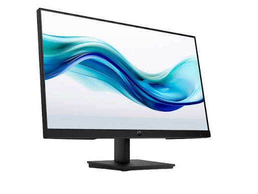

Monitor
Pildil on näha lai lauaarvuti ekraan ehk monitor, mis kuvab kaasaegset operatsioonisüsteemi töölauda. Monitor on väljundseade, mis muudab arvuti töödeldud andmed kasutajale nähtavaks pildiks ja graafiliseks liideseks. Suur ja kõrge eraldusvõimega ekraan on oluline, sest see vähendab silmade väsimust ning võimaldab mugavalt korraga mitme rakendusega töötada.
Loe lähemalt: Vikipeedia — Kuvar
